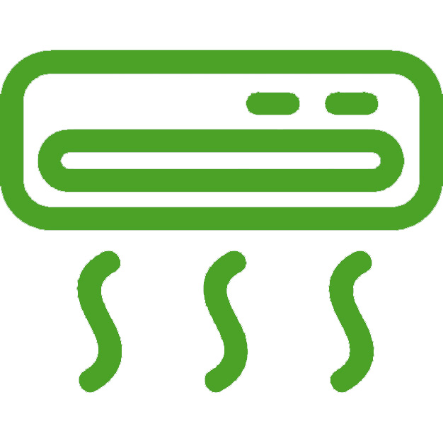

• Днепродзержинск,
• Днепропетровск,
• Новомосковск,
• Харьков,
• Белгород,
• Курск,
• Орёл,
• Тулу.
Автомобили оборудованы для дальних поездок, в салоне есть все для Вашего комфорта:

+38(097)156-96-45
+38(066)604-00-81
+7(968)33-99-120
+7(968)880-35-30
Или оставьте нам свое сообщение
Команда наших водителей- профессионалы высшей квалификации
Всегда полноценно отдыхают, соблюдая режим труда и отдыха.